Nørre Nærå
Ziemlich grobkörniger, grauer Granit
Größte Höhe: 128 cm
Größte Breite: 76 cm
Runenhöhe: 21,5 / 27 / 29 cm
Runeninschrift :
Gebrauche das (d.h. habe Nutzen vom) Kumbl, Thormund!
oder eher:
Gebrauche das Kumbl ! Thormund (näml. ritzte die Runen).

84 - Nørre Nærå - Letztes Update 05.10.2025
Listennummer : DR 211 / DK Fyn 25
Navidaten: 55.57334 10.28342 oder: Nørre Nærå, Kirkegyden 9, 5450 Otterup, Dänemark
Transliteration: þurmutR | niąut : kubls
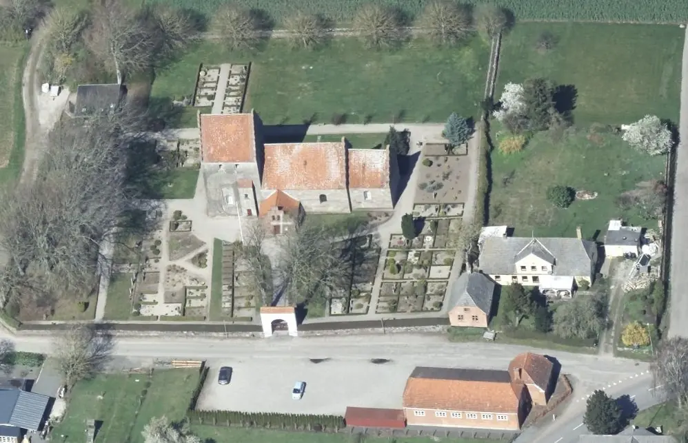
Dies ist ein Luftfoto vom 17.04.2023 von Skråfoto, das die Kirche von Nørre Nærå zeigt. Skråfoto ist eine Webanwendung, die von Klimadatastyrelsen weltweit kostenlos bereitgestellt wird - Lizenz: CC BY 4.0. Die Aufnahmen werden seit 2017 alle zwei Jahre erneuert und neben einer Senkrechtaufnahme wird ein Schrägbild aus jeder Himmelsrichtung angeboten, das man über eine Adresssuche aufrufen kann.
Der Runenstein in der Kirche findet seine erste Erwähnung im Tagebuch des Aalborger Bischofs Jens Bircherod (*15.01.1658 - 06.12.1708), der sorgfältig alles aufschrieb, was er auf seinen vielen Besuchen in seiner Diözese hörte und sah,
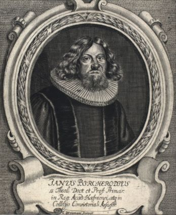
Bildquelle: Det Kgl. Biblioteks billedsamling - Lizenz: Public Domainmit einem Eintrag vom 19. Juni 1684, in dem sein Schwager, Peder Jakobsen Winslow (*20.03.1636 - 13.01.1705, Pfarrer) aus "Othense (= Odense)", von dem kürzlich neu entdeckten Runenstein "auf Næraa Kirchhof" berichtet.
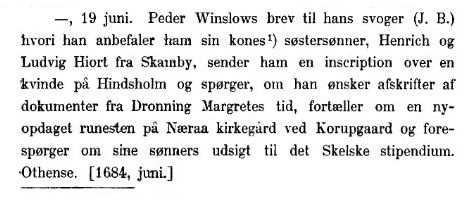
Übersetzung: ―, 19. Juni. Peder Winslows Brief an seinen Schwager (Jens Bircherod), in dem er die Neffen seiner Frau, Henrich und Ludvig Hiort aus Skamby, empfiehlt, schickt ihm eine Inschrift über eine Frau in Hindsholm und fragt, ob er Kopien von Dokumenten aus der Zeit Königin Margrets haben möchte, erzählt von einem neu entdeckten Runenstein auf dem Næraa-Friedhof in der Nähe von Korupgaard und erkundigt sich nach den Aussichten seiner Söhne für das Skels-Stipendium. Odense. [1684, Juni]
Quelle: In den Jahren 1894, 1895 und 1896 ließ Carl S. Christiansen Artikel in der "Personalhistorisk Tidsskrift" aufzeichnen: Ansicht eines Teils der Korrespondenz in Jens Bircherods Tagebüchern. Die Königlichen Bibliothek in Kopenhagen hat die Artikel in durchsuchbare PDF-Dateien gescannt, die über diese Links bei Claus Rønlev heruntergeladen werden können. Hier der betreffende Link: Breve til og fra biskop Jens Bircherod 1683-1694 (S. 195 = Seite 2 in der pdf-Datei)
In dem "Visitatsbog 1588 - 1604" (47v - S. 131-132) des damaligen Bischofs von Fünen, Jacob Madsen (*24.07.1538 - 24.09.1606, Bischof von 1587-1606), in dem er mit Datum vom 05. August 1596 auf Nørre Nærå eingeht, wird der Runenstein noch nicht erwähnt. Darin heißt es aber auszugsweise (übersetzt): "Das Dorf Nørre Nærå wird erstmals 1282 in einem alten Pergamentbuch als Niærthug erwähnt."
Außerdem hat er zwischen den Zeilen diese Zeichnung der Kirche eingebettet.
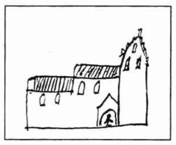
An anderer Stelle heißt es: "Die Kirche im Ort wurde möglicherweise 1304 als ecclesie Niærthøu bezeichnet. Dies kann sich jedoch auch auf Sønder Nærå beziehen. Im Jahr 1555 wurde beschlossen, dass die Bewohner der sechs Bauernhöfe in der Region Roerslev künftig die Kirche in Nørre Nærå anlaufen sollten, da ihre Pfarrkirche in Kørup abgerissen wurde. 1676 versuchte der Gutsherr/Kirchenbesitzer Rudolph Abraham Podebusk (*1629 - 23.07.1716) in Kørup vergeblich, die Nørre Nærå Kirche abreißen zu lassen. Sein Wunsch war, dass die Gemeindemitglieder von Nørre Nærå in Zukunft die Dreifaltigkeitskirche auf dem Gutshof Kørup (erbaut 1603) aufsuchen sollten, während die Bruchsteine zur Reparatur und Wiedereröffnung der stillgelegten mittelalterlichen Kirche in Agernæs mit seiner alten Pfarrei nördlich des Krogsbølle-Fjords genutzt werden könnte."
Der Runenstein wurde wohl zu Beginn des Jahres 1780 in die Kirchhofmauer eingesetzt, wo er 1842 wiederentdeckt wurde. Pastor Edvard Hanning West (*02.01.1808 - 25.05.1866, Pfarrer in Nørre Nærå zwischen 1836 und 1844 - link-LIVES - Konfirmation) ließ ihn daraufhin herausnehmen und im Waffenhaus aufstellen - siehe auch unten.
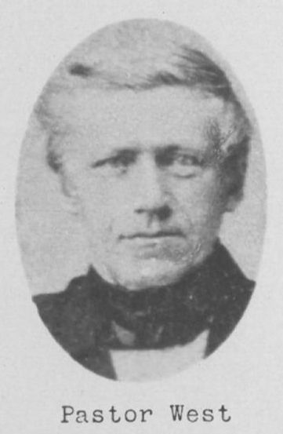
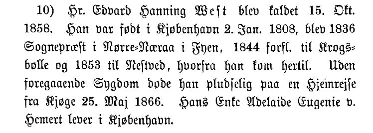
Bildquelle: Trøst-Hansens sognekort - Nr. 2747 - Lizenz: Public Domain / Textquelle: Vallø og Omegn - En historisk skildring - von Anders Petersen - 1877 - S. 299
Wenige Jahre später wurde er innerhalb der Kirche in eine Wand - Ecke beim Chorbau - eingemauert. Hier fand er sich 1934 bei einer Untersuchung von Erik Moltke (*04.04.1901 - 19.10.1984, Runologe, Historiker - link-LIVES)
 Bildquelle: Scan von Buchumschlag "Runerne i Danmark og ders
oprindelse" - Erik Moltke - 1976 - Lizenz:
CC-BY-SA
Bildquelle: Scan von Buchumschlag "Runerne i Danmark og ders
oprindelse" - Erik Moltke - 1976 - Lizenz:
CC-BY-SA
derart eingemauert, dass nur der Inschriftteil zu sehen war. 1938 wurde er deshalb auf dessen Geheiß herausgenommen und an der gleichen Stelle erneut eingemauert, jedoch so, dass nun der ganze Stein zu sehen ist. Er zählt zu den frühen Runensteinen und wird auf die Zeit 800-900 datiert. Die Inschrift auf dem dreikantigen Stein liest sich von unten nach oben, wobei nicht klar ist, welche Linie zuerst gelesen werden soll. Der Stein wohl zur gleichen Zeit wie der Gørlev Stein 1 geritzt.
Die Kirche Nørre Nærå stammt aus der Romanik und wurde aus Felsbrocken und Mönchssteinen erbaut. Der Turm wurde in spätgotischer Zeit hinzugefügt. Die Kirche wurde von 1883 bis 1884 restauriert und erhielt hier unter anderem die heutigen Fenster und war mit rauem Zementputz bedeckt. die Kirche Nørre Nærå gehörte bis 1925 zum Gutshof Kørup und dann zu dem Herrenhaus Egebjerggård.
Dieses frühe schriftliche Zeugnis zur Runeninschrift von Unbekannt ist ausweislich der Infos der digitalen Sammlung des Nationalmuseums in Kopenhagen zwischen dem 12. August 1791 und dem 29. April 1854 enstanden - Lizenz: Public Domain
Die erste bildliche Darstellung des Runensteins liefert eine Bleistift Zeichnung von Martin Friedrich Arendt (* 22. Februar 1773 in Altona; April 1823 in der Nähe von Venedig/Italien war ein deutscher Botaniker und Altertumsforscher), die dieser am 24. April 1811 angefertigt hat.
 Bildquelle:
Antiqvarisk-Topografisk Arkiv - Lizenz:
Public Domain
Bildquelle:
Antiqvarisk-Topografisk Arkiv - Lizenz:
Public Domain
Sie wird heute im "Antiqvarisk-Topografisk Arkiv" in Kopenhagen aufbewahrt. Dort durfte ich sie bei meinem Besuch am 27.09.2022 in deren Lesesaal begutachten und fotografieren.
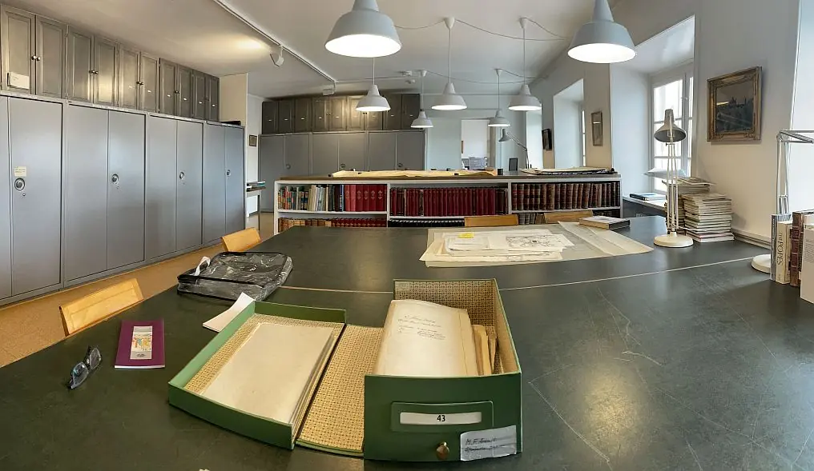
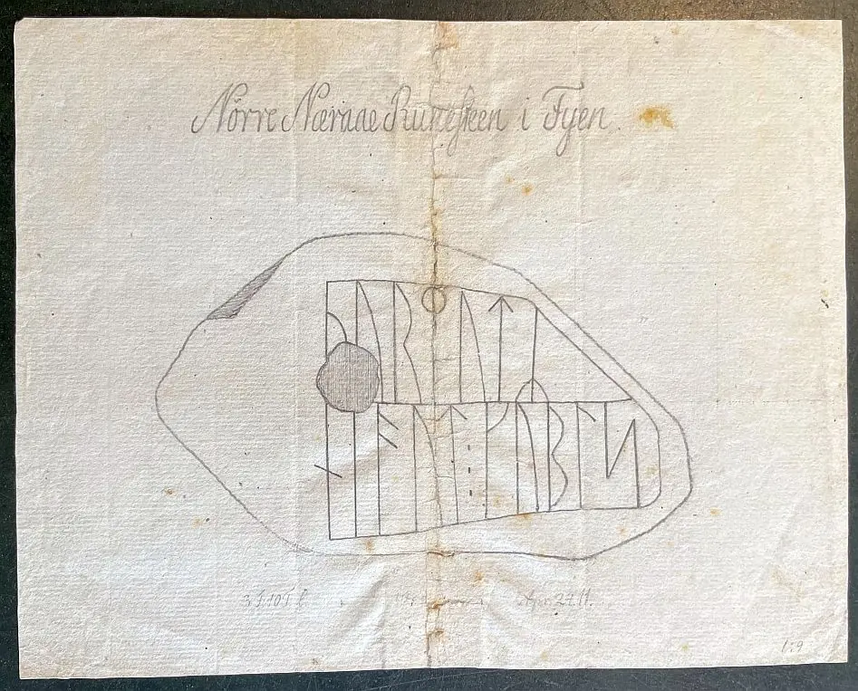
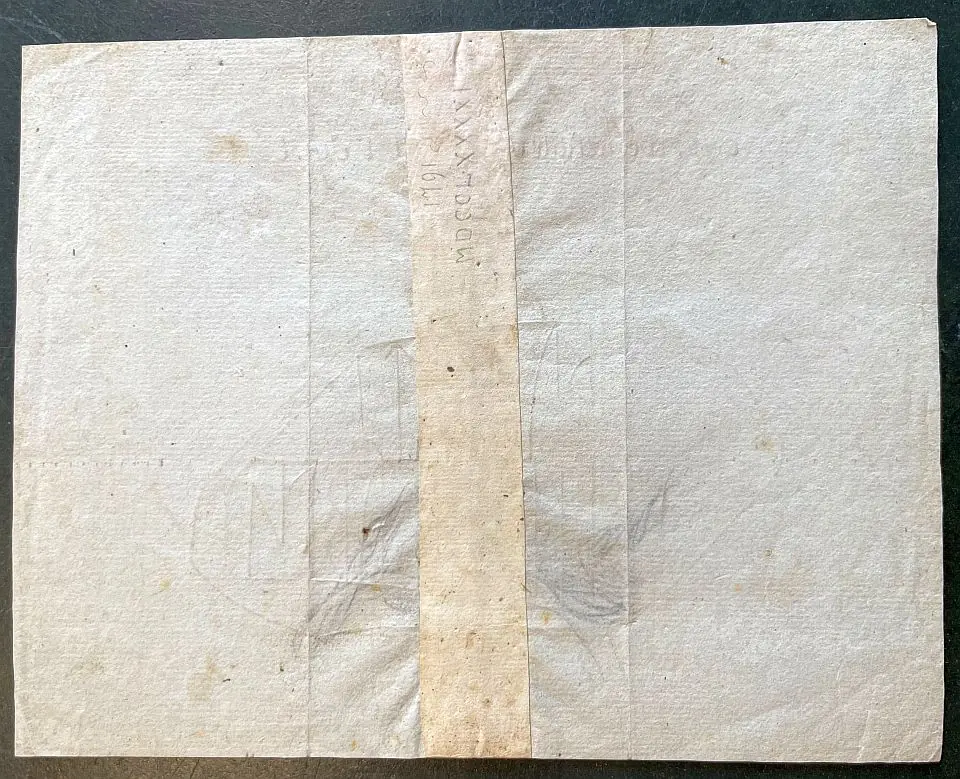
Die Originalzeichnung, erhalten auf einem Stück stockfleckigem Papier, Format 21,5 x 16,5 cm, wurde im Maßstab 1:9 ausgeführt. In Schönschrift steht auf dem Blatt über der Zeichnung geschrieben: "Nørre Næraae Runesteen i Fyen". Unter der Zeichnung findet sich eine (kaum noch erkennbare) Linie als Maßstock. Links vom Maßlinie steht "3 F. 10 T. l" und rechts davon "Apr. 24. 11".
Auf dem Klebestreifen der über die Rückseite verläuft steht mit Bleistift geschrieben: "1791 - MDCCLXXXXI", deren Bedeutung in dem Zusammenhang nicht bekannt ist.
Wenn man diese früheste Zeichnung mit den späteren Fotografien vergleicht, fällt einem natürlich sofort auf, dass diese im Gegensatz zu den späteren fotografischen Darstellungen an der Steinoberfläche eine Absplitterung im unteren Bereich der linken Runenreihe aufweist. Um welche beschädigten Runenzeichen es sich dabei handelt, konnte man aber trotzdem noch erkennen. Auf der Zeichnung von 1862 - siehe unten - sind es sogar drei beschädigte Runenzeichen.
Laut Erik Moltke gibt es dafür nur eine einzige Erklärung, wie er in seiner Dissertation "Jon Skonvig og de andre runetegnere. Et bidrag til runologiens historie i Danmark og Norge I-II, 1956-58 Band 2", 1958, auf der S. 221-222, ausführt. Die beschädigte Fläche wurde nach 1811 aufbereitet und die Runen neu eingeritzt! Dies müsste seiner Auffassung nach im Jahr 1842 geschehen sein, als der Stein aus der Mauer der Kirchhofeinfriedung ins Waffenhaus verbracht und dort aufgestellt, oder ein paar Jahre später als er in der Nordwand des Kircheschiffs eingemauert wurde. Die späteren Fotografien zeigen auch deutlich, dass dieses Vorhaben der "Neuritzung" geglückt ist!
Von Martin Friedrich Arendt findet sich eine Erwähnung in den "Antiqvariske Annaler, Band 2, 1815" auf der S. 348 . Dort ist zu "K. 1812 Januari" unter der Nummer 427 dieser Eintrag:
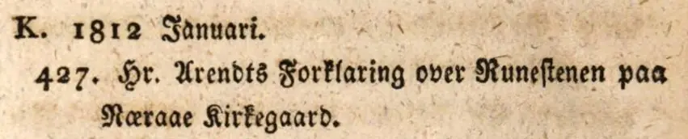
Der Eintrag ist Teil des
Kapitel VII. mit der Überschrift "
Im Jahr 1824 findet sich bei Rasmus Nyerup (*12.03.1759 - 28.06.1829, dänischer Literaturhistoriker, Philologe, Folklorist und Bibliothekar)
 Bildquelle: 1827
aus Kunstsammlung abfotografiert -
Det Kgl. Biblioteks billedsamling - Lizenz:
Public Domain
Bildquelle: 1827
aus Kunstsammlung abfotografiert -
Det Kgl. Biblioteks billedsamling - Lizenz:
Public Domain
in seinem deutschsprachigen Buch "Verzeichnis der in Dänemark 1824 noch vorhandenen Runensteine" auf der S. 20 dieser kurze Eintrag zu dem Runenstein:
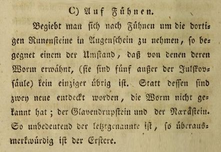
Dann dauert es bis zum Jahr 1832 bis bei Johan Gustav Liljegren (*27.02.1791 -02.06.1837, schwedischer Nationalarchivar und Archäologe)
 Bildquelle:
Schwedisches Reichsarchiv - Lizenz:
Public Domain
Bildquelle:
Schwedisches Reichsarchiv - Lizenz:
Public Domain
in seinem Werk Run-Lära auf der S. 126-27 eine Lesung / Deutung vorgenommen wird.
Von Liljegren ist im Folgejahr 1833 auch noch das Buch "Run - Urkunder" erschienen, in dem er diesen Runenstein auf der S. 169 unter der Nr. 1488 aufführt.
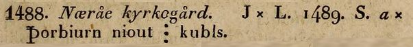
Der in Nørre Nærå amtierende Pastor Edvard Hanning West (*02.01.1808 - 25.05.1866, Pfarrer in Nørre Nærå zwischen 1836 und 1844 - link-LIVES - Konfirmation) schickte mit Datum vom 25.07.1842 eine Mitteilung an das Nationalmuseum in Kopenhagen über seine Entdeckung des Runensteins, die sich im dortigen Archiv bewahrt hat. Darin schreibt er laut Ludv. F. A. Wimmer - näheres zur Person siehe unten - u.a.:
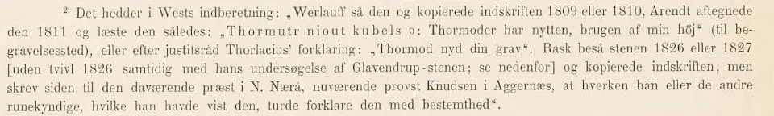
Der hier erwähnte "provst Knudsen" war Hans Joachim Evald Knudsen (*02.07.1792 - 04.05.1877 - link-LIVES). Er war Pfarrer an mehreren verschiedenen Orten - Bederslev, Nørre Nærå (zw. 1818-1831), Krogsbølle, Ellested und Gislev - aber stets auf der Insel Fünen.
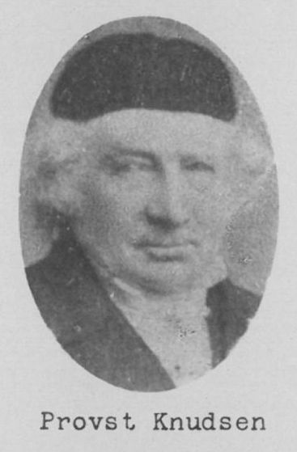
Bildquelle: Trøst-Hansens sognekort - Nr. 2747 - Lizenz: Public DomainNach der o.a. Beschreibung waren aber auch noch andere Herren zur Begutachtung des Runensteins in Nørre Nærå gewesen. In den Jahren 1809 oder 1810 Erich Christian Werlauff (*02.07.1781 - 05.06.1871, dänischer Historiker - link-LIVES)
 Bildquelle:
Wikipedia - Lizenz:
Public Domain
Bildquelle:
Wikipedia - Lizenz:
Public Domain
am 24.04.1811 Martin Friedrich Arendt (* 22. Februar 1773 - April 1823, Botaniker und Altertumsforscher), in den Jahren 1826 oder 1827 Rasmus Christian Rask (*22.11.1787 - 14.11.1832, dänischer Indogermanist und Polyglott - link-LIVES)
 Bildquelle:
Wikipedia - Lizenz:
Public Domain
Bildquelle:
Wikipedia - Lizenz:
Public Domain
und Skúli Þórðarson Thorlacius (*10.04.1741 - 30.03.1815, isländischer Philologe)
 Bildquelle:
Wikipedia - Lizenz:
Public Domain
Bildquelle:
Wikipedia - Lizenz:
Public Domain
Deren Erklärungen und Stellungnahmen waren der Mitteilung von Pastor Edvard Hanning West offenbar beigefügt gewesen.
Von P. H. Rasmussen - wer dies war, konnte ich bislang noch nicht herausfinden - wurde am 28.07. und am 15.08.1856 ein Bericht mit einer Zeichnung und einer Kartenskizze an die Altertümersammlung in Kopenhagen eingereicht, die sich im Nationalarchiv (wohl das heutige Antiqvarisk-Topografisk Arkiv) erhalten haben.
Prof. Jens Jacob Asmussen Worsaae (*14.03.1821 - 15.08.1885, dänischer Archäologe und Vorgeschichtler - link-LIVES)
 Bildquelle: Fotografie
zw. 1863-1900 von Fotograf Budtz Müller
(*26.12.1837 -
30.12.1884) -
Det Kgl. Biblioteks billedsamling - Lizenz:
Public Domain
Bildquelle: Fotografie
zw. 1863-1900 von Fotograf Budtz Müller
(*26.12.1837 -
30.12.1884) -
Det Kgl. Biblioteks billedsamling - Lizenz:
Public Domain
hat zu diesem Runenstein in seinem Notesbog IV aus dem Jahr 1850 einen Eintrag auf der S. 145 vorgenommen.
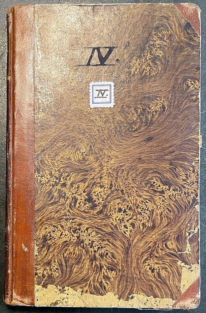
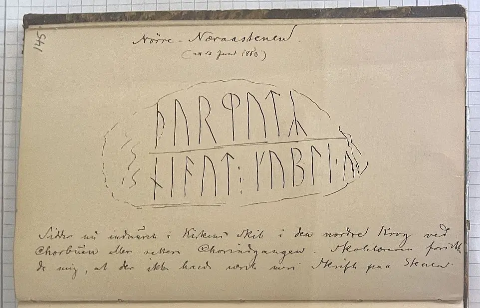
Dessen Tagebücher werden in Kopenhagen in dem "Antikvarisk-Topografisk Arkiv" aufbewahrt, worüber ich bei meinem Besuch am 27.09.2022 diese Fotos anfertigen konnte.
Arendts Zeichnung nutzte Carl Christian Rafn (*16.01.1795 - 20.10.1864, Altertumsforscher - link-LIVES - Bestattungsprotokoll)
 Bildquelle: Zeichner
Magnus Petersen -
Det Kgl. Biblioteks billedsamling - Lizenz:
Public Domain
Bildquelle: Zeichner
Magnus Petersen -
Det Kgl. Biblioteks billedsamling - Lizenz:
Public Domain
für die Wiedergabe der Inschrift in seinem Werk "Antiquités de l'Orient - Monumens runographiques" von 1856 auf der S. 195.
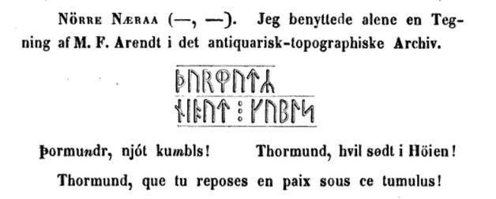
Prof. P. G. Thorsen (*07.08.1811 - 06.05.1883, Bibliothekar, Runenforscher und Historiker - link-LIVES) / Artikel: Levnedsbeskrivelser af de ved Københavns Universitets Firehundredaarsfest promoverede Doktorer, Illustreret Tidende 1882, Nr. 1235 - vom 27.05.1833 / Grabstein in Varde / Eheschließung in Varde am 19. August 1848
 Bildquelle: Fotografie
zw. 1863-1900 von Fotograf Budtz Müller
(*26.12.1837 -
30.12.1884) -
Det Kgl. Biblioteks billedsamling - Lizenz:
Public Domain
Bildquelle: Fotografie
zw. 1863-1900 von Fotograf Budtz Müller
(*26.12.1837 -
30.12.1884) -
Det Kgl. Biblioteks billedsamling - Lizenz:
Public Domain
hat seine Beschreibung zu dem Runenstein in seinem Werk "De danske runemindesmærker beskrevne og forklarede, anden Afdeling, Jyllands Runemindesmærker, II. Text, 1880" auf der S. 250 wiedergegeben. Die u.a. Zeichnung, die Prof. Julius Magnus Petersen (*04.09.1827 - 31.01.1917, Archäologischer Zeichner und Restaurator - link-LIVES - Bestattungsprotokoll)
 Bildquelle: Fotografie
von 1903 von Fotograf Marius Christensen
(*24.06.1874 -
25.06.1907) -
Det Kgl. Biblioteks billedsamling - Lizenz:
Public Domain
Bildquelle: Fotografie
von 1903 von Fotograf Marius Christensen
(*24.06.1874 -
25.06.1907) -
Det Kgl. Biblioteks billedsamling - Lizenz:
Public Domain
im Auftrag von P. G. Thorsen angefertigt hat, findet sich schon in dem Jahre zuvor erschienenen Buch, in "Runemindesmærkerne i Slesvig, 1864" auf der S. 265.
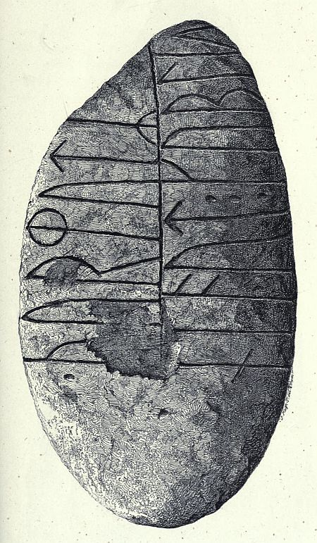
P. G. Thorsens Nachlass (Bezeichnet als: P. G. Thorsens optegnelser, tegninger m.m. vedrørende runer og runemindesmærker - überführt aus der Kopenhagener Universitätsbibliothek 1929 - Gemäß Ministerialschreiben vom 04.03.1929; früher benannt als Additamenta 612 kvart) - findet sich heutzutage in der Königlichen Bibliothek unter NKS 3296 kvart (in mehreren einzelnen Pappschachteln). In der Pappschachtel Nr. 18 fand ich bei meinen Studien in der "Kgl. Bibliotek" in Kopenhagen am 27.09.2022 zu Nørre Nærå zwei Aufzeichnungen. Das erste Blatt ist rechts oben mit dem Datum "21. Juli 1838" versehen, gibt eine Zeichnung und beschreibende Texteeintragungen wieder.
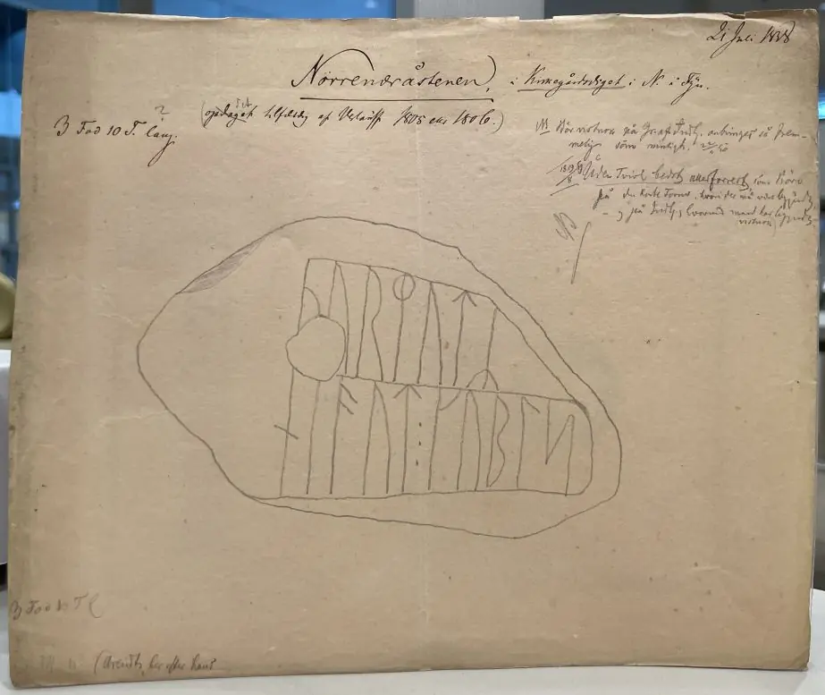
Das zweite Blatt ist fast vollständig von einer Bleistiftzeichnung des Runensteins ausgefüllt, die von Magnus Petersen gefertigt wurde, der sie rechts unten signiert und auf 1862 datiert hat. Die einzelnen Runen hat er mit Maßangaben und die Zeichnung unten links mit einem Maßstab versehen.
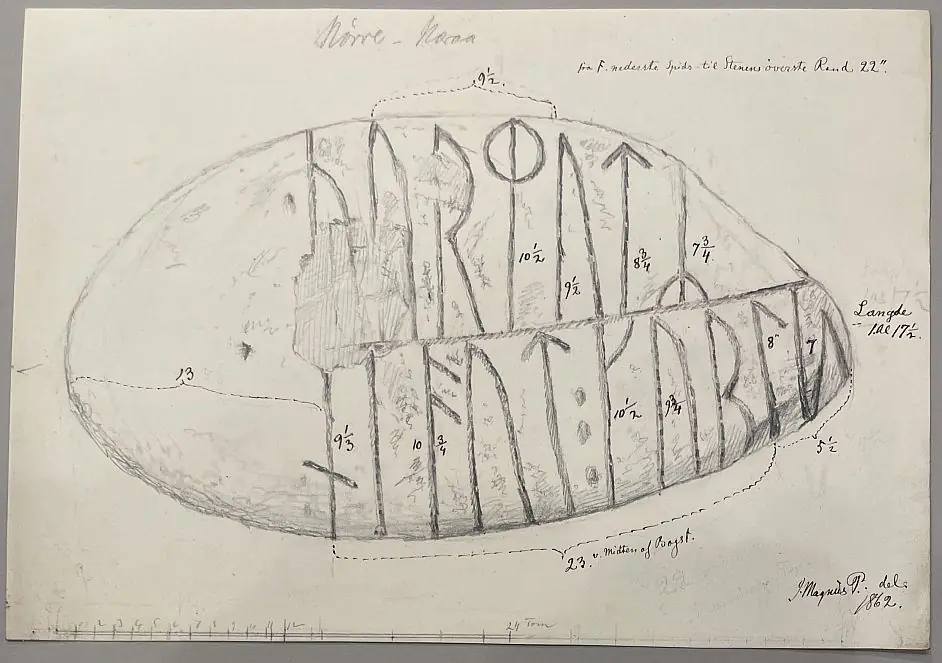
Im Jahr 1864 bringt Carl Arnold Edwin Jessen (*01.01.1833 - 14.05.1921, dänischer Sprachwissenschaftler - link-LIVES)
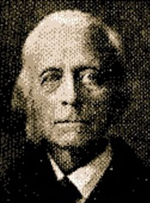
Bildquelle: Heimskringla - Lizenz: Public Domainin der "Tidsskrift for Philologi og Pædagogik, Band 5" im Rahmen seines Artikels mit dem Titel "Noter til P. G. Thorsens bog om sønderjyske runindskrifter" unter der Nummer 27 auf der S. 294 ff. einen Beitrag zu der Runeninschrift.
 Bildquelle:
Minder fra min Virksomhed paa Arkæologiens
Omraade fra 1845 til 1908 von
Magnus Petersen (*04.09.1827 - 01.02.1917) auf der
Seite 265 - Lizenz:
Public Domain
Bildquelle:
Minder fra min Virksomhed paa Arkæologiens
Omraade fra 1845 til 1908 von
Magnus Petersen (*04.09.1827 - 01.02.1917) auf der
Seite 265 - Lizenz:
Public Domain
Der nächste zeitliche Beitrag zu dem Runenstein kommt von George Stephens (*13.12.1813 - 09.08.1895, englischer Archäologe und Philologe) in seinem Band II von 1867-68 mit dem Titel "The old-northern runic monuments of Scandinavia and England" auf der S. 760 ff. In dem Beitrag findet sich diese Zeichnung von Magnus Petersen aus dem Jahr 1863. Stephens erklärt in seinem Beitrag, dass ihm auch Zeichnungen von Arendt, Worsaae und von P. H. Rasmussen (siehe oben zu 1856) vorgelegen hätten, die alle übereinstimmten.
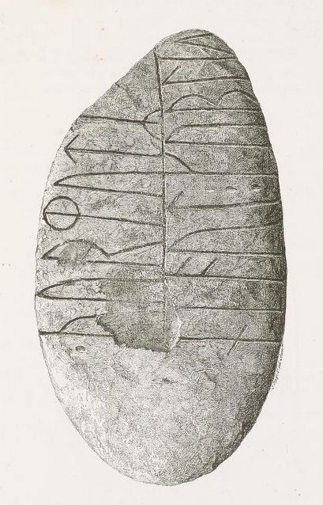
Die Inschrift, zu der er anmerkt, dass die Runen für einen so kleinen Stein extrem gross seien, liest er so: "Thurmund, genieße dein Grab!" Er führt auch aus: " Die Lesart ist ganz einfach, zuerst die obere Zeile und dann die untere, oder besser gesagt, wenn wir den Block auf einem Hügel stehen sehen, zuerst die linke Reihe und dann die rechte". Die dänische Runendatenbank hingegen schreibt heute "Die Inschrift wird von unten nach oben gelesen. Unbekannt, ob die rechte oder linke Zeile zuerst gelesen werden soll."
Prof. Ludv. F. A. Wimmer (*07.02.1839 - 29.04.1920, Philologe und Runenforscher - link-LIVES - Politiets registerblade - Bestattungsprotokoll)
 Bildquelle: Fotografie
zw. 1877-1900 von Fotograf Hansen & Weller -
Det Kgl. Biblioteks billedsamling - Lizenz:
Public Domain
Bildquelle: Fotografie
zw. 1877-1900 von Fotograf Hansen & Weller -
Det Kgl. Biblioteks billedsamling - Lizenz:
Public Domain
hat zu diesem Runenstein erstmals in den "Aarbøger for nordisk oldkyndighed og historie" Ausgabe 1874, in seinem Aufsatz mit dem Titel " Runeskriftens Oprindelse og Udvikling i Norden" (S. 1 - 270) auf der S. 146 zur Thematik "skilletegn (= Trennungszeichen)" und der S. 169 zum Runenzeichen "ą" berichtet.
In dem Buch von Fritz Burg (*27.03.1860 - 16.11.1928, deutscher Bibliothekar) mit dem Titel "Die älteren nordischen Runeninschriften: eine sprachwissenschaftliche Untersuchung" aus dem 1885 findet sich ab der S. 142 der "Anhang I. Wimmers brief 20.21. IV. 84". Auf der S. 155 datiert Ludv. F. A. Wimmer diesen Runenstein auf die Zeit um 850 - 875.
In seinem Buch in deutscher Sprache mit dem Titel "Die
Runenschrift" aus dem Jahr 1887 kommt
Ludv. F. A. Wimmer auf den
S. 168 (Trennungszeichen ... 3 Punkte befinden sich auf dem Stein
von Nörrenærå),
S. 198 (Frühzeitig wurde nämlich im kürzeren alphabet
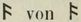 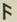 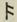 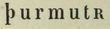 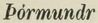


Er verweist in seinen Ausführungen auch auf den Runenstein von Arrild der in einem Grabhügel aufgefunden wurde, wohl als magisch-apotropäischer Brauch, das heißt als Abwehrzauber.
Axel Olrik (*03.07.1864 - 17.02.1917, dänischer Philologe, Professor für Nordische Volkskunst - link-LIVES)
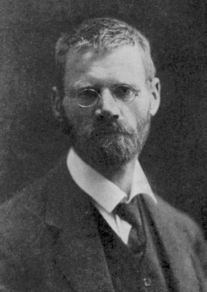
Bildquelle: Wikipedia - Lizenz: Public Domainbringt in dem Buch "Dania - Tidsskrift for dansk sprog og Litteratur samt folkeminder - Band IV" auf der S. 31 diesen Beitrag.
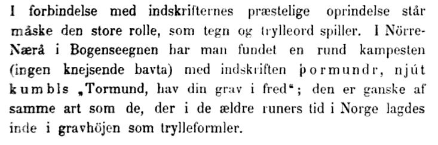
Übersetzt: "Im Zusammenhang mit dem priesterlichen Ursprung der Inschriften steht vielleicht die große Rolle, die Zeichen und Beschwörungsformeln spielten. In Norre Naera in der Region Bogense wurde ein runder Felsbrocken (kein Gneis Bautastein) mit der Aufschrift pormundr, njút kumbls Thormund habe dein Grab in Frieden gefunden. Es handelt sich dabei um den gleichen Typ wie diejenigen, die zur Zeit der älteren Runen in Norwegen im Inneren von Grabhügeln als Zaubersprüche platziert wurden".
Sophus Bugge (*05. Januar 1833 - 08. Juli 1907, norwegischer Philologe)
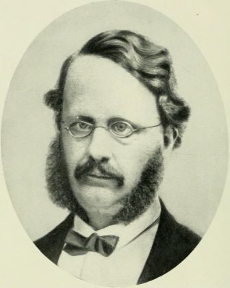
Bildquelle: Wikipedia - Lizenz: Public Domaingeht in dem Buch "Norges indskrifter med de aeldre runer" auf der S. 291 im Zusammenhang mit seinen Studien zum norwegischen Runenstein Tørvika B auch kurz auf diesen Runenstein ein. Dieser norwegische Runenstein war zusammen mit dem Stein Tørvika A im Jahr 1883 in einem Grabgügel aufgefunden worden.
Ludv. F. A. Wimmer bringt den Runenstein mit ausführlichem Text und einer Zeichnung - natürlich von Magnus Petersen - in seinem großformatigen Werk "De danske runemindesmærker undersøgte og tolkede af Ludv. F. A. Wimmer, Andet Bind, Runestenene i Jylland og på øerne. 1899-1901" ab der S. 365. Auf der S. 318 in dem Band kam er schon kurz auf den Runenstein zu sprechen: "...In die Zeit zwischen 850 und 875 fällt zweifellos der Nørre-Nærå-Stein von Fünen...".
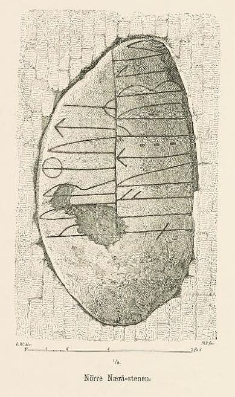
Ludv. F. A. Wimmer hat seine jahrelangen Aufzeichnungen der "Kgl. Bibliotek" in Kopenhagen überlassen. Ein Verzeichnis darüber wurde 1915 in Buchform herausgegeben - "Collectio runologica Wimmeriana: Fortegnelse over Ludv. F. A. Wimmers runologiske o. a. Samlinger i Det kgl. Bibliotek"
In seinen Unterlagen in der Königlichen Bibliotek in Kopenhagen, die ich vor Ort am 26. und 27.09.2022 studieren durfte, befindet sich in "III - Originaltegninger af de danske Runemindesmærker, udførte paa Undersøgelsesrejserne af Magn. Petersen og kontrollerede paa Stedet af Ludv. Wimmer, samt Prøvetryk af de paa Grundlag af de nævnte Tegninger, Aftryk o. s. v. til De danske Runemindesmærker" udførte Afbildninger med Wimmers Rettelser" unter der Nummer 86


diese Zeichnung des Runensteins von Magnus Petersen, die er auf den 21.07.1879 datiert hat. Da war der Runenstein noch quer eingemauert, bis er 1938 herausgenommen und hochkant eingemauert wurde.
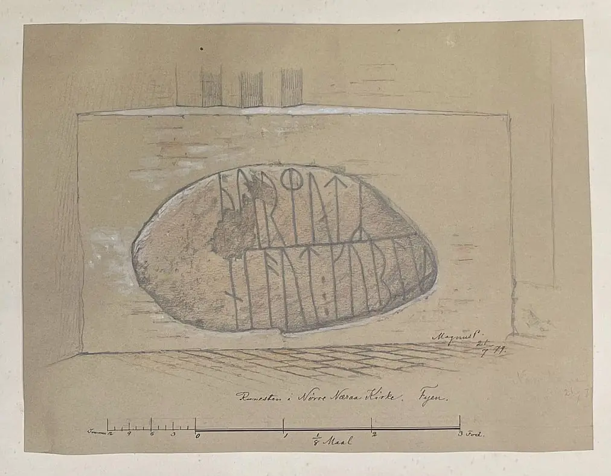
In der Sammlung von Ludv. F. A. Wimmer fand ich bei meinen Studien auch noch diese Arbeitspapier von ihm.
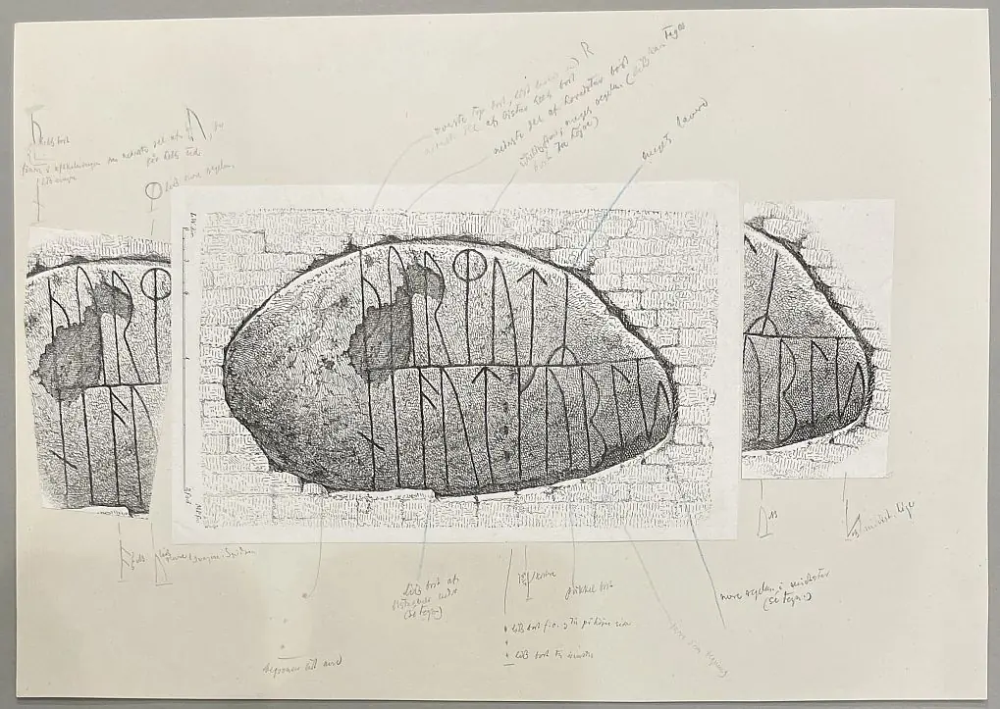
Ludv. F. A. Wimmer beschreibt den Runenstein: ...Der sichtbare Teil des eher unscheinbaren, eiförmigen Steins, der aus rötlichem Granit besteht... / ...Die ungewöhnlich klare und deutliche Inschrift beginnt mit der Linie links... / ...Vor b befindet sich ein Loch im Stein, das auf den ersten Blick leicht als eingemeißeltes Trennzeichen wahrgenommen werden kann, wie es in der Darstellung von Thorsen geschehen ist; aber eine genauere Betrachtung zeigt sicherlich, dass es nicht geschnitzt ist, sondern ganz den gleichen Charakter hat wie ein ähnliches Loch an der Spitze des Hauptstabs der B-Rune zwischen dieser Rune und N... / Dann kommt er noch auf die Zeichnung von Martin Friedrich Arendt zu sprechen, der einen Rahmen um die Inschrift gezeichnet hatte, von der auf dem eingemauerten Steins nichts zu erkennen sei und demnach vom Kalkputz der Wand komplett verdeckt werde..
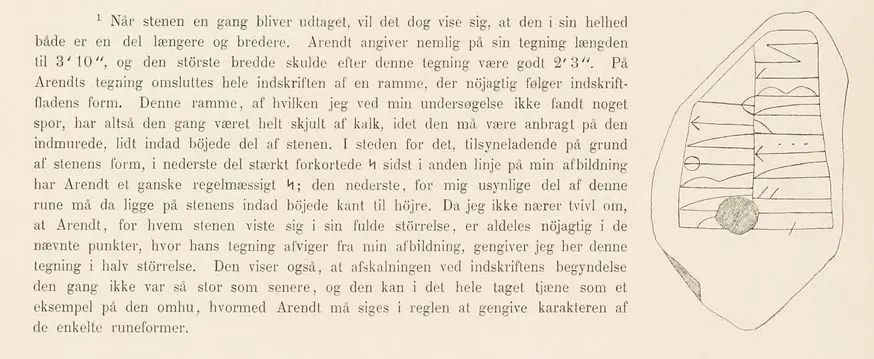
An dessen Zeichnung sei auch erkennbar, dass die Abblätterung an der Inschrift am Beginn der linken Linie früher noch nicht so schlimm war wie nun. Die Wiedergabe spreche für die Sorgfalt, mit der Arendt im Allgemeinen den Charakter der einzelnen Runenformen wiedergibt.
Prof. Julius Magnus Petersen berichtet 1909 in seinen Memoiren, die den Titel "Minder fra min Virksomhed paa Arkæologiens Omraade fra 1845 til 1908" tragen, auf der S. 50: ...Nun möchte ich aber noch einmal auf die Jahre 1855-56 zurückkommen, als Prof. Thorsen endlich ein Lebenszeichen bezüglich des erwähnten Runenwerks von sich gab. Im erstgenannten Jahr bat er mich, nach Fünen zu reisen, um Zeichnungen des Runensteins in Kjerteminde (Rønningestein) und Nørre Næraasten sowie des großen Glavendrup-Steins anzufertigen...".
Carl Johan Sverdrup Marstrander (*26.11.1883 23.12.1965, norwegischer Sprachwissenschaftler/Runologe) hat in der "Norsk Tidsskrift for Sprogvidenskap, Band III, 1929", auf der S. 163 zu dem Begriff "nióta (besitzen)" einen Beitrag im Zusammenhang mit diesem Runenstein.
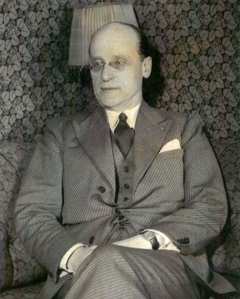
Bildquelle: Wikipedia - Lizenz: CC BY-SA 3.0Von Hugo Pipping (*05.11.1864 - 31.07.1944, finnischer Linguist)
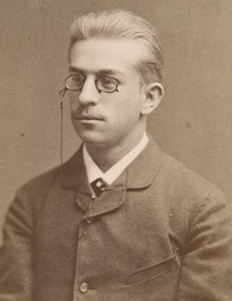
Bildquelle: Wikipedia - Lizenz: Public Domainfindet sich in dem Werk "Acta philologica scandinavica: tidsskrift for nordisk sprogforskning, Band 4, 1929" ab der S. 247 ein deutschprachiger Artikel mit dem Titel "Zur Deutung der Inschrift auf dem Runenstein von Rök". Darin geht er auf der S. 265, Fußnote 5, in dem u.a. Screenshot kurz auf diesen Runenstein ein.
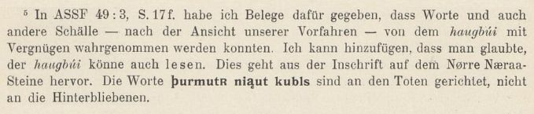
In der digitalen Sammlung des Nationalmuseums in Kopenhagen findet sich dieses Foto aus dem Jahr 1938, das von Erik Moltke (*04.04.1901 - 19.10.1984, Runologe, Historiker) aufgenommen wurde, nachdem der Runenstein auf sein Geheiß hin aus der Kirchenwand herausgenommen worden war - Lizenz: CC-BY-SA
Im Vorfeld zu dem 2016 erschienenen Buch von Lisbeth M. Imer (*1973, Runologin am Nationalmuseum Kopenhagen)
Bildquelle: Nationalmuseum Kopenhagen - Info zur Runologin Lisbeth M. Imer
"Danmarks Runesten - en fortælling" reiste sie mit dem Fotografen Roberto Fortuna zur Bestandsaufnahme durch die Lande. Dieser hat die Runensteine mit Schräglicht aufgenommen und darüber wirklich herausragende Fotos erzielt. Das nachstehende linke Foto hat Roberto Fortuna am 05.03.2012 gefertigt. Das rechte Foto zeigt den Fotografen bei seiner Arbeit in der Kirche von Nørre Nærå und gibt auch mal den Aufwand wieder, der betrieben werden musss / das Equipment das benötigt wird, um solch aussagekräftige Fotos von Runensteinen und deren oft schwer erkennbaren Runeninschriften zu machen - Internetfund im Zusammenhang mit dem damaligen Blog - leider nicht mehr abrufbar - https://natmus.dk/presse-og-nyheder/nyhedsarkiv/2012/runesten-skal-fotograferes/.
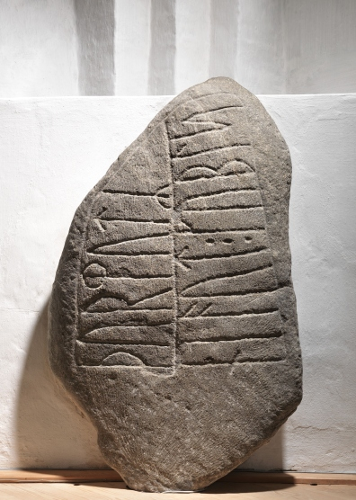

Das Foto wurde der digitalen Sammlung des Nationalmuseums in Kopenhagen entnommen - Lizenz: CC-BY-SA
Im Internet finden sich über die Homepage der dänischen Runendatenbank hier alle Infos zu diesem Runenstein.
Der entsprechende Eintrag zu dem Runenstein in "Fund og Fortidsminder" ist hier verlinkt.
Über die Webseite "Runes" - ein Forschungsprojekt der Akademie zu Göttingen - kann man diese Informationen zu diesem Runenstein abrufen.
Dieser Link führt zu "Lex.dk / Den store Danske" mit einer umfangreichen dänischsprachigen Abhandlung über die Nørre Nærå Kirche, die mit zahlreichen Bildern
Auf der Webseite von "Danmarks kirker" findet man zu der Kirche von Nørre Nærå eine reich bebilderte 31-seitige Arbeit aus dem Jahr 2019. Die darin befindlichen Fotos aus dem Jahr 2018 von Arnold Mikkelsen können auch über die Digitale Sammlung des Nationalmuseums aufgerufen werden. Sie unterliegen lediglich der Lizenz CC BY-SA 4.0. Hier ein Beispiel - die Kirche aus Südost gesehen.
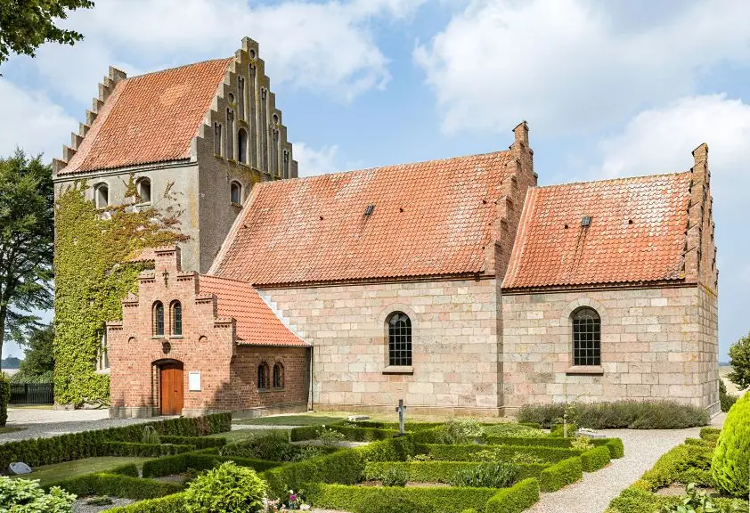
Ich habe die Kirche und den darin befindlichen Runenstein von Nørre Nærå bislang nur einmal besucht, dies war am Dienstag 06.08.1991 - siehe Foto im linken Frame.